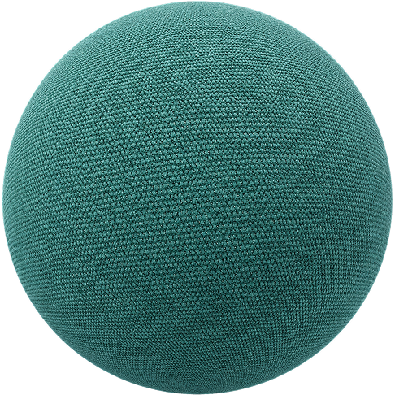
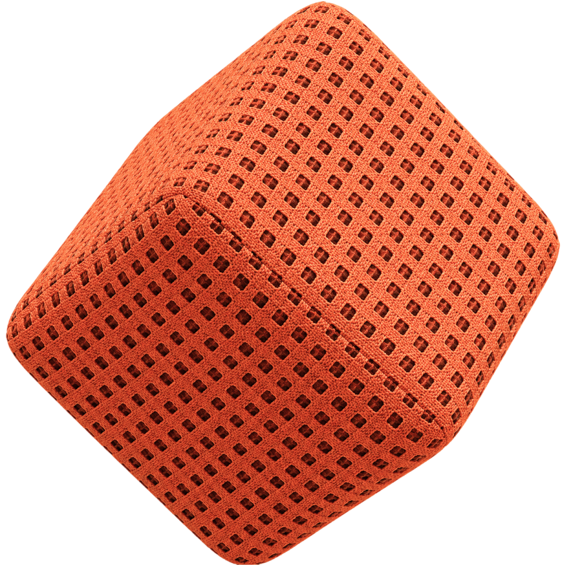
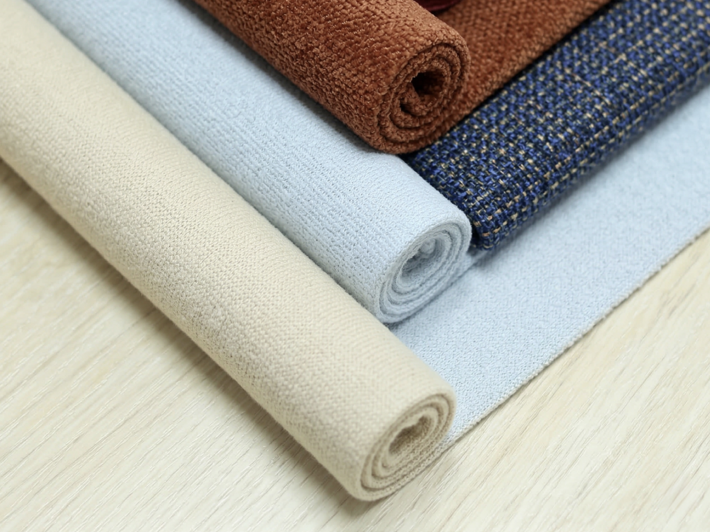
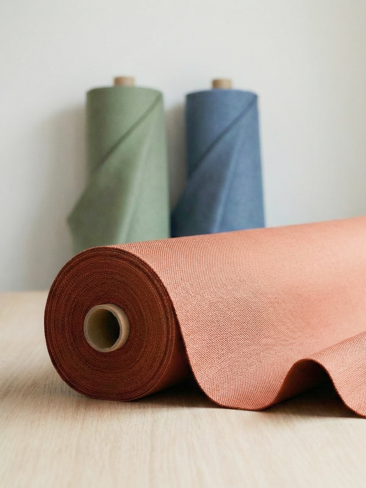

Tkaniny obiciowe
Wszystko zaczęło się od miejsca. Od nauki cierpliwości, tkaniny pojawiły się później. Puszcza Białowieska uczy wybierać świadomie i dostrzegać detale, które inni pomijają. To stąd wynieśliśmy nasze podejście do pracy - blisko natury, w harmonii, widząc precyzyjnie określony cel. Dziś działamy globalnie szukając i importując tkaniny z tą samą rzetelnością, której nauczyliśmy się u źródeł.
Znajdujemy rozwiązania, produkty je dopełniają. W świecie multi możliwości naszą rolą jest dostarczenie dokładnie tego co sprawi, że twój projekt nabierze kształtu. Bierzemy na siebie negocjacje, profesjonalną weryfikację jakości i każdy kilometr transportu. Eliminujemy zgadywanie i ryzyko dostarczając Tobie gotowe efekty, dzięki którym możesz skupić się na tworzeniu, mając pewność, że logistyka jest w dobrych rękach.

Mówimy wprost, działamy sprawnie. Wierzymy w przejrzyste relacje: proponujemy tylko to, co wybralibyśmy sami. Wnikliwie analizujemy Twoją potrzebę. Realizujemy zamówienie wtedy, gdy jest ono dla Ciebie opłacalne i korzystne. Tam gdzie liczy się czas i sprawna realizacja, konieczne decyzje podejmujemy szybko. Naszą misją jest pilnowanie szczegółów po to, abyś Ty cieszył się spokojem i pewnością dostawy.

Odpowiedzialność, która ma twarz. Działamy w trójkę to jest nasz atut i największa moc. Dzięki temu każde zlecenie przechodzi bezpośrednio przez nasze ręce, a Ty zawsze jesteś dla nas najważniejszym klientem. W naszej współpracy wszystko jest zauważone po drodze - zawsze wiesz z kim rozmawiasz i kto odpowiada za Twoje zamówienie. Traktujemy każdy projekt osobiście z pełnym zaangażowaniem, w każdy splot i każdy metr tkaniny.